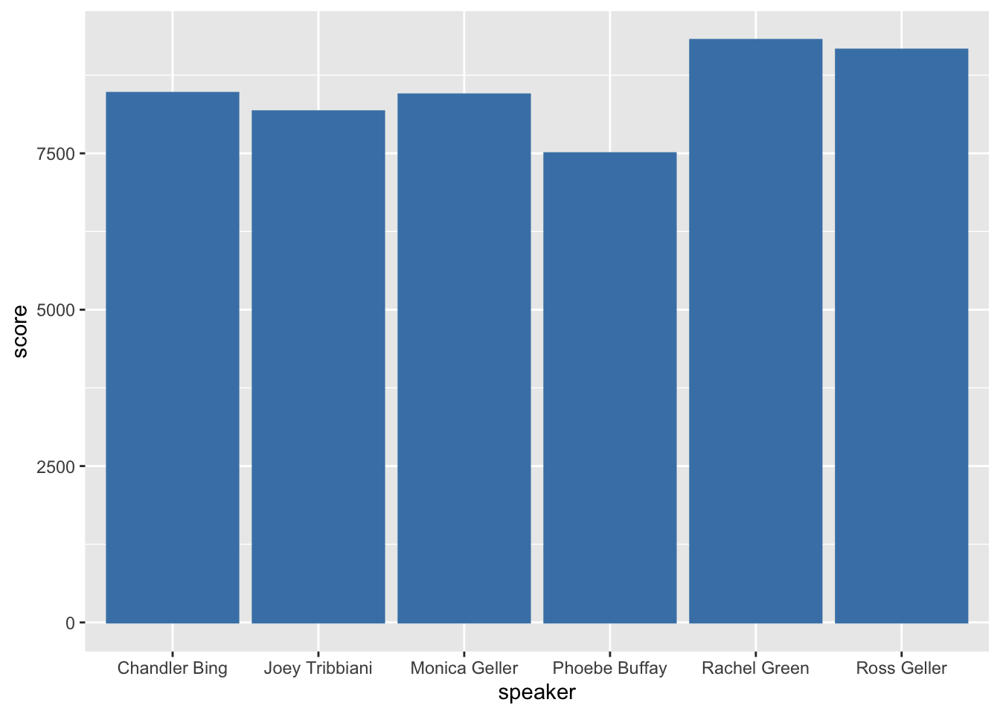
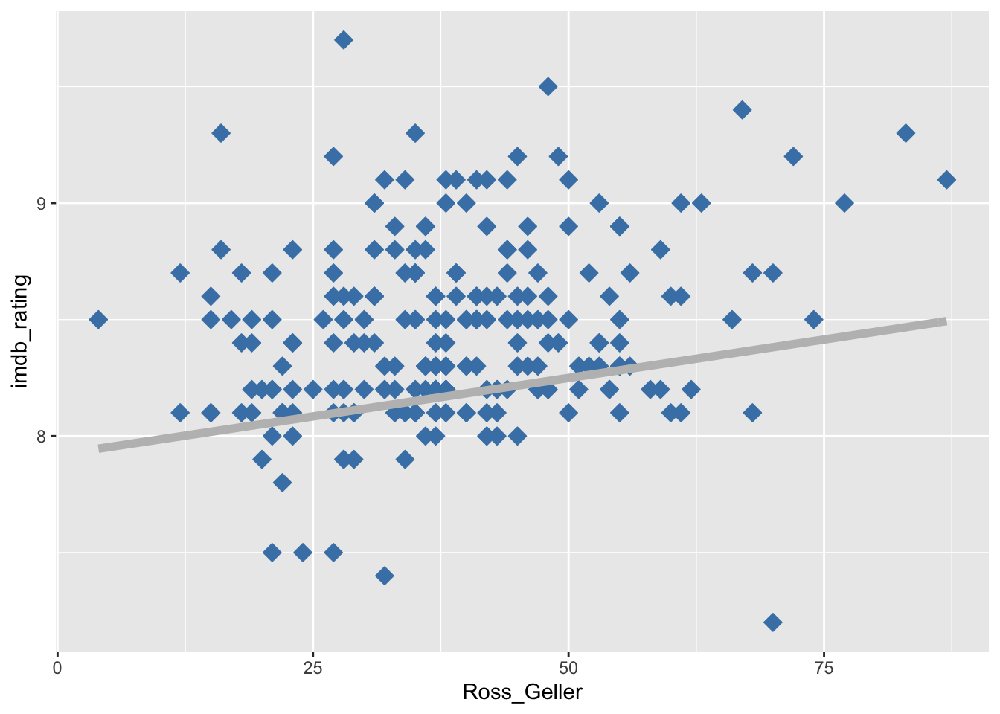
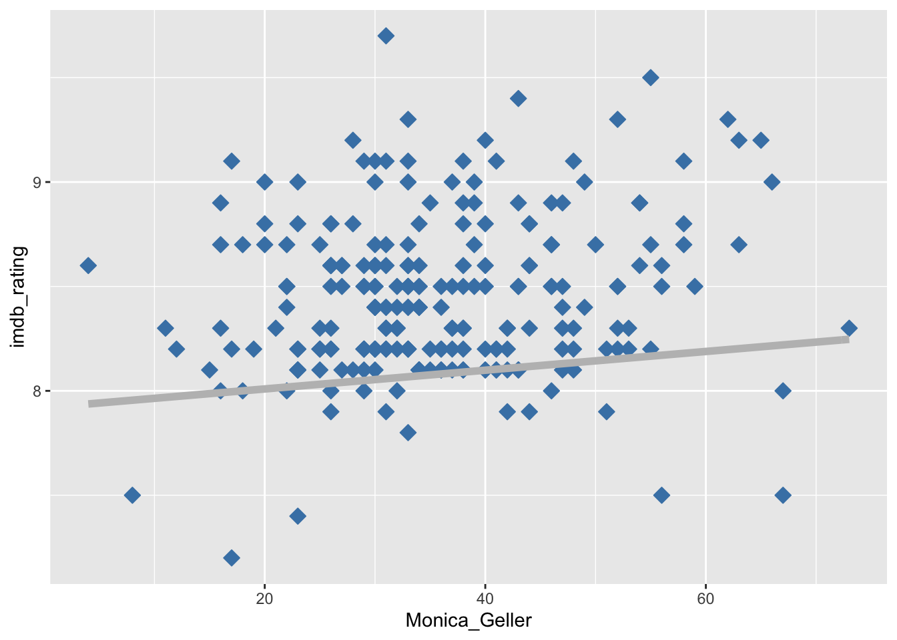
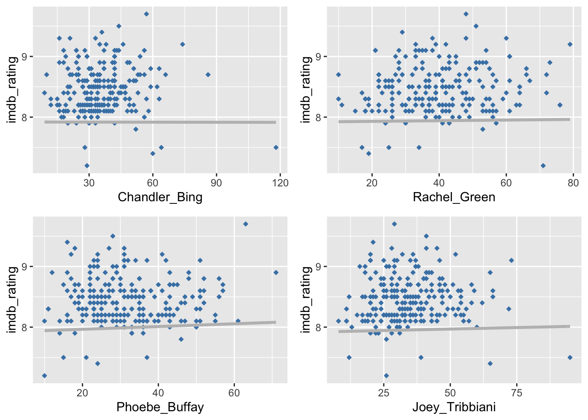

Complex regression

Whether there is a realation between character appearnces to the IMDb rating
To examine our hypothesis, we broke it into three main phases.
1) Create a table that counts how many sentences the charterer spoke in an episode.
2) Create a table that maps the rate and US views per episode (in millions).
3) Combine the data and create a Complex regression.
The graph below shows the amount of sentences every character spoke
As can be seen, Ross and Rachel speaks the most, which might imply the result.
rank_speakers <- merge(dt_king_of,grade,by = c("season","episode"))
rank_speakers <- rank_speakers %>%
filter(!grepl('Sr.', speaker)) %>%
group_by(season, episode) %>%
arrange(season, episode)
agg_score <- rank_speakers %>% group_by(speaker) %>%
summarize(
score = sum(per_episode)
)
ggplot(data = agg_score, aes(speaker,score)) + geom_col(colour = "steelblue", fill="steelblue")
For creating the table for the model, we manipulated the data in three stages:
1) Group the data by charterer’s name and count the utterances in every episode.
2) Merge IMDb rating to each of the episodes.
3) Select the only relevant information for the model.
In the table below, we can see the completed table.
The table includes a different column for each character who holds the number of sentences in the episode.
head(multiFull)## season episode Ross_Geller Monica_Geller Joey_Tribbiani Rachel_Green
## 1 1 1 47 73 39 48
## 2 1 2 68 28 8 38
## 3 1 3 33 52 28 26
## 4 1 4 40 47 24 43
## 5 1 5 40 33 36 37
## 6 1 6 22 34 31 15
## Chandler_Bing Phoebe_Buffay imdb_rating
## 1 39 19 8.3
## 2 16 14 8.1
## 3 36 38 8.2
## 4 32 31 8.1
## 5 35 23 8.5
## 6 58 10 8.1With the completed table, we ran the model. The result below is the summary of the regression model.
complex_reggrsion = lm(formula = imdb_rating ~ Ross_Geller +
Monica_Geller + Joey_Tribbiani +Rachel_Green + Phoebe_Buffay +
Chandler_Bing ,data = multiFull)
summary(complex_reggrsion)##
## Call:
## lm(formula = imdb_rating ~ Ross_Geller + Monica_Geller + Joey_Tribbiani +
## Rachel_Green + Phoebe_Buffay + Chandler_Bing, data = multiFull)
##
## Residuals:
## Min 1Q Median 3Q Max
## -1.34261 -0.26492 -0.03229 0.23573 1.30214
##
## Coefficients:
## Estimate Std. Error t value Pr(>|t|)
## (Intercept) 7.9193379 0.1576485 50.234 < 2e-16 ***
## Ross_Geller 0.0065995 0.0018705 3.528 0.000505 ***
## Monica_Geller 0.0044872 0.0022638 1.982 0.048661 *
## Joey_Tribbiani 0.0009816 0.0019844 0.495 0.621313
## Rachel_Green 0.0005370 0.0019658 0.273 0.784963
## Phoebe_Buffay 0.0022627 0.0022730 0.996 0.320541
## Chandler_Bing -0.0000432 0.0020440 -0.021 0.983157
## ---
## Signif. codes: 0 '***' 0.001 '**' 0.01 '*' 0.05 '.' 0.1 ' ' 1
##
## Residual standard error: 0.387 on 229 degrees of freedom
## Multiple R-squared: 0.08164, Adjusted R-squared: 0.05758
## F-statistic: 3.393 on 6 and 229 DF, p-value: 0.003167
Results: Ross and Monica are the only charterers that we found an effect between their’s amount of utterances and the IMDB rating
(their mom should be really proud).
In addition, we can see that Ross’s result has the lowest Pr and the sharpest B1.
liner_reg_Ross_Geller <-ggplot(filterd, aes(x = Ross_Geller, y = imdb_rating)) +
geom_point(size =3, shape = 23, colour ="steelblue", fill = "steelblue") +
stat_function(fun=equation1,geom="line",col="grey", size =2)
liner_reg_Monica_Geller <-ggplot(filterd, aes(x = Monica_Geller, y = imdb_rating)) +
geom_point(size = 3, shape = 23, colour ="steelblue", fill = "steelblue") +
stat_function(fun=equation2,geom="line",col="grey", size =2)
liner_reg_Joey_Tribbiani <-ggplot(filterd, aes(x = Joey_Tribbiani, y = imdb_rating)) +
geom_point(size = 1, shape = 23, colour ="steelblue", fill = "steelblue") +
stat_function(fun=equation3,geom="line",col="grey", size =1.2)
liner_reg_Rachel_Green <-ggplot(filterd, aes(x =Rachel_Green , y = imdb_rating)) +
geom_point(size = 1, shape = 23, colour ="steelblue", fill = "steelblue") +
stat_function(fun=equation4,geom="line",col="grey", size =1.2)
liner_reg_Phoebe_Buffay <-ggplot(filterd, aes(x = Phoebe_Buffay, y = imdb_rating)) +
geom_point(size = 1, shape = 23, colour ="steelblue", fill = "steelblue") +
stat_function(fun=equation5,geom="line",col="grey", size =1.2)
liner_reg_Chandler_Bing <-ggplot(filterd, aes(x = Chandler_Bing, y = imdb_rating)) +
geom_point(size = 1, shape = 23, colour ="steelblue", fill = "steelblue") +
stat_function(fun=equation6,geom="line",col="grey", size =1.2)Demonstrate the relation between actor and rating
The grapes below show the b1 of the regression for each variable.
As can be seen in the regression summary, two variables impact the IMDb rating.


The grapes below show that b1=0 in the regression for each variable.
The regression summary shows that four variables do not impact the IMDb rating.

At this stage, we saw a connection between Phoebe’s utterances amount per episode and the IMDb rating.
so to ensure our variables don’t interfere and that the correlation and the strength of correlation between the predictor variables don’t harm the regression model, we use the VIF function.
The Graph below represent the VIF of the complex regression model
vif_values <- vif(complex_reggrsion)
vif_values_value <- c(1.033673,1.095303,1.153097,1.029526,1.120718,1.017614,1.176870)
vif_values_names <- c("us_views_millions","Ross_Geller","Monica_Geller","Joey_Tribbiani","Rachel_Green","Phoebe_Buffay","Chandler_Bing" )
par(mar=c(5,10,4,1)+.1)
barplot(height=vif_values_value, names=vif_values_names, las =1 , width = 25, legend = TRUE,
names.arg=c("us_views_millions","Ross_Geller","Monica_Geller","Joey_Tribbiani","Rachel_Green","Phoebe_Buffay","Chandler_Bing"), main = "VIF Values", horiz = TRUE, col = "steelblue", xlim = c(0,10))
abline(v = 5, lwd = 3, lty = 10)As can be seen, no variable got more than 5, which means that they are fine.